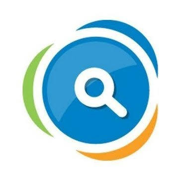

01 DEPLOYEDFULL-STACK WEB APPLICATION2026
ReClaimX ↗
A lost-and-found platform designed to help people report lost belongings and discover items reported as found, bringing the recovery process into one web experience.
HTMLCSSJavaScriptNode.jsMongoDB
✳ Recognized by Sankalp Tech Club, Dr. D. Y. Patil ACS College (2026).